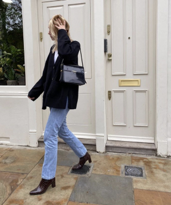

Фото из инстаграмм Криси Форд
Крисси Форд
Кто?Крисси Форд, сотрудник Harper's Bazaar US,
базирующейся в Нью-Йорке.
Почему: «Круто» - это такое простое слово, чтобы описать
ее стиль, но оно иначе никак. От строгого кроя до эффектных платьев с яркими принтами и цветами - от
Крисси невозможно оторвать взгляд.
Фото из инстаграмм Лиззи Хэдфилд
Лиззи Хэдфилд
Кто? Лиззи - самопровозглашенный «Модный блоггер с
севера, живущий в Лондоне», который обслуживает моду, а также личность с сатирическим чувством
юмора.
Почему: вышеупомянутые пункты, а также мастер-класс по
мужской одежде с шикарной изюминкой.

Фото из инстаграмм Линдси Холланд
Линдси Холланд
Кто? Другая северная девушка, бывшая
физиотерапевт, ставшая влиятельной в мире моды и ведущая подкастов, вместе со своей лучшей подругой
Лиззи Хэдфилд.
Почему: Линдси фокусируется не столько на тенденциях,
сколько на стиле, который просуществует
десятилетиями. Я люблю ее атмосферу принцессы Дианы Слоун в стиле рейнджер благодаря огромным
пиджакам, джинсам с высокой талией, массивным трикотажным изделиям и элегантным ботинкам и туфлях.
Хотя она умело вплетает в свой гардероб более модные вещи, такие как блестящая сумка Рэйчел By Far и
обязательные мулы Wandler.